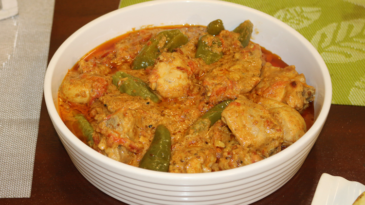

ACHAR GOSHT

| preparations |
Cooking |
Servings |
| 15 mins |
20 mins |
4 persons |
Ingredient
| Ingredient |
Quanntity |
| Meat |
1 kg |
| Finely cut tomatoes |
5-6 medium |
| Yogurt |
1/2 kg |
| Garlic Paste |
2 tbsp |
| Ginger Paste |
2 tbsp |
| Big Green Chilies |
10-12 |
| Lemon Juice |
2 tbsp |
| Oil/ clarified butter |
1 cup |
| Recipe Mix |
1 packet |
Method
- Mix 2 tbsp of recipe mix in lemon juice and fill them in green chilies.
- Then in yogurt add remaining recipe mix, ginger and garlic mix it and put it on meat and leave for 2 to 3 hours.
- Now heat half oil or clarified butter and add tomatoes cook them until its water gets dried.
- In remaining oil or clarified butter add marinated meat and cook on slow flame for 20 to 30 minutes or until meat get tender and its water gets dried
- Now in cooked meat add tomatoes and green chilies and cook them on slow heat until oil separates.